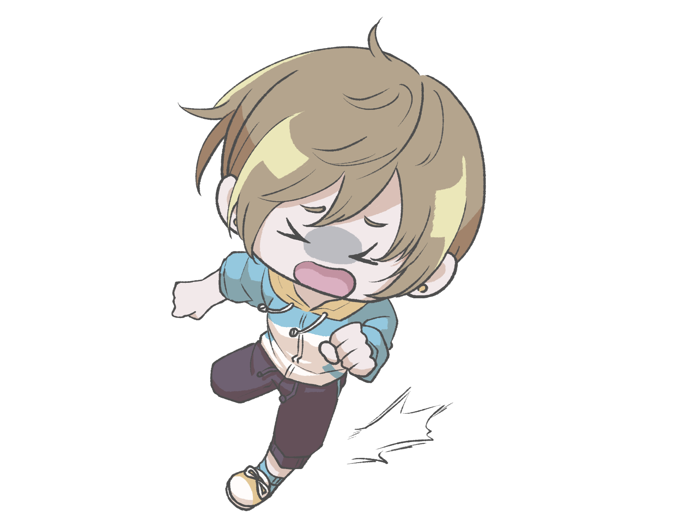
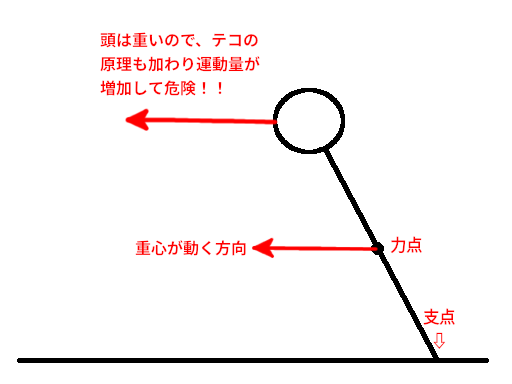
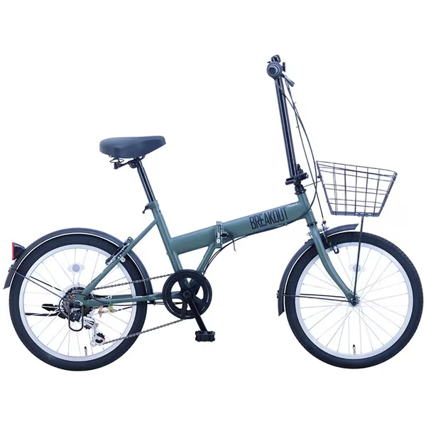
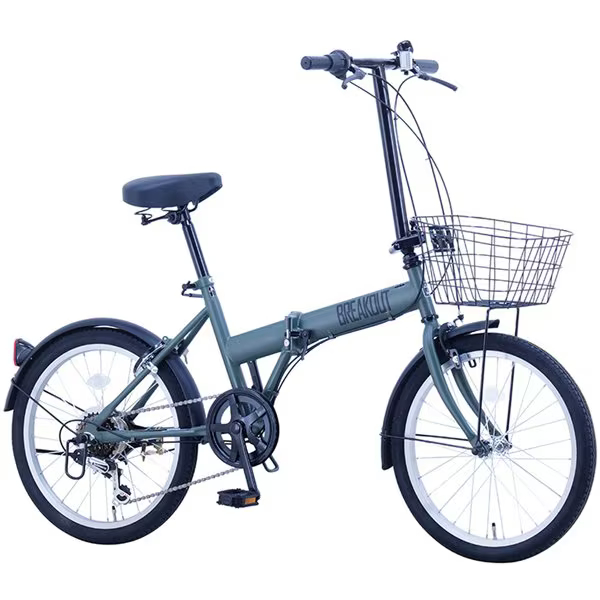
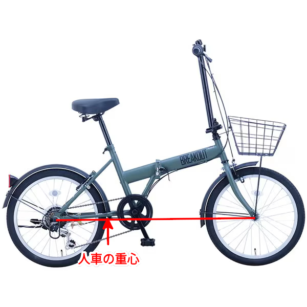
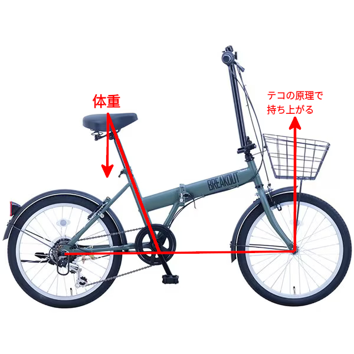
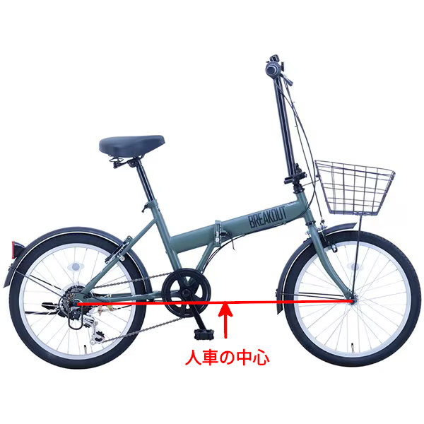
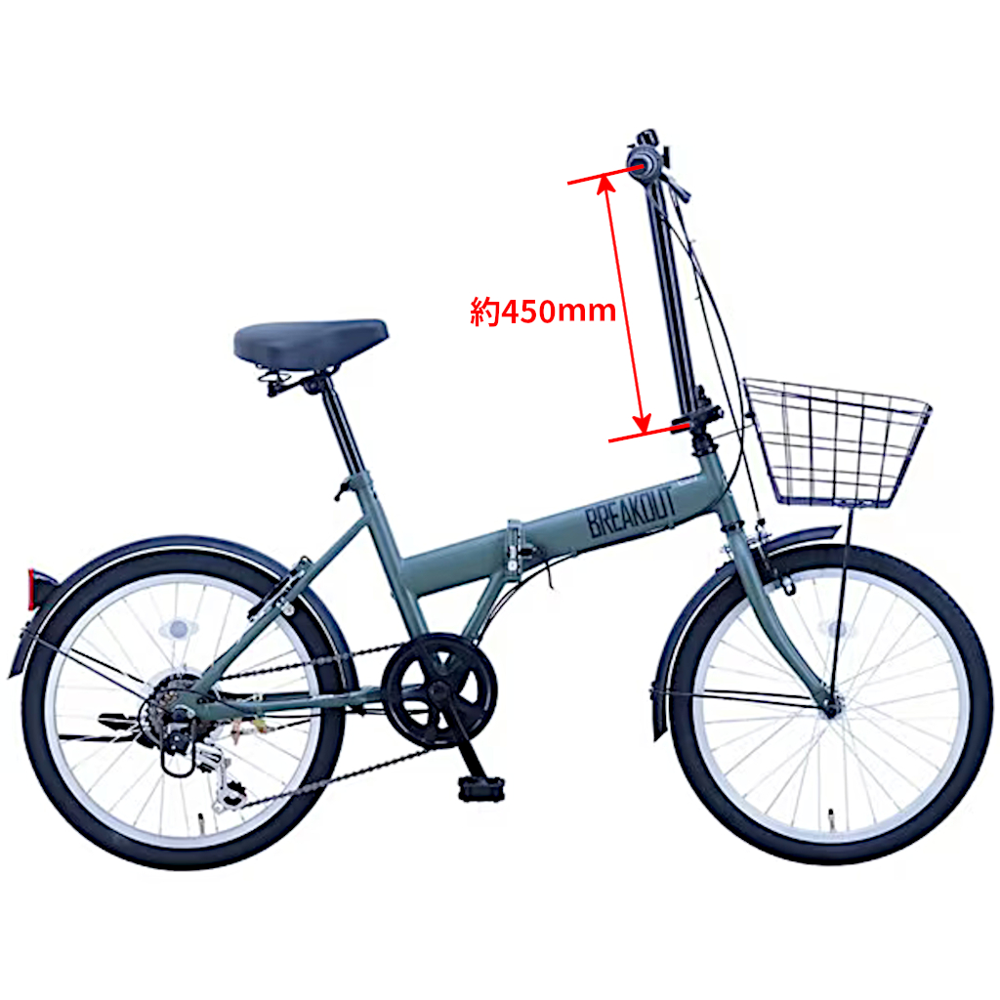
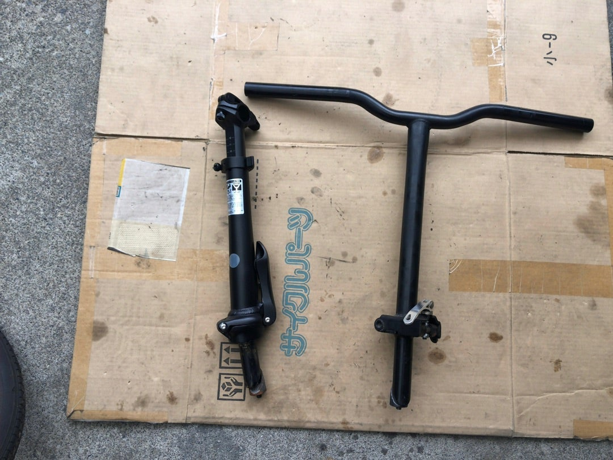

小脳性協調運動障害がある状態で、日常生活における、怪我のリスクを減らすための、より安全な転倒方法について整理を試みる。自転車からの落車における被害軽減については別項で整理を試みるので除外する。

体を一本の棒に例えた場合、転倒時は足と床の接点が支点、体のへその辺りが力点、頭部付近が作用点となり、テコの原理で全身が前方に向けて飛ぶ力が加わる。

このため、顔面から路面に打ち付ける可能性が強くなる。また上半身の運動量が大きくなることから、手を着くと、手や、手首、腕の骨折の可能性が高まる。また他の部位の骨折の可能性も高まる。
さらに転倒しないように力が入ると、支点から後方に足を蹴り出す力が加わってしまい、さらに上半身の運動量が増す。つまり肋骨、鎖骨、その他の骨折まで発生する可能性が強まり、被害が増す可能性が強くなる。
上図と上記概説は、前方への転倒を前提としている。後方への転倒は、後頭部を強打する可能性があり、場合によっては生命に関わる。
前方への運動エネルギーによる前方への運動と、重力による位置エネルギーによる落下運動を、人体に害の少ない運動に変換するアプローチが必要となる。また位置エネルギーを減ずることで、人体へのダメージを減らすアプローチも必要であろう。
運動エネルギーへのアプローチとしては、運動エネルギー自体を減ずることが、物理学的にほぼ不可能なことから、回転運動や滑り運動に変換することで、人体への被害を軽減するアプローチが必要であろう。
後日追記していきます。

本来自分がいろいろ判断して購入した物品に文句を言うのは潔さがないとは思うものの、やはり後々怪我の跡が顔面に残るような事態になってしまった以上、なにも書き残さないわけにはいかない。
なにがどうまずかったのか、なるべく分析的に書き残すことにする。また、その分析を元に、購入した自転車をリファインして安全な自転車にするにはどうすればいいのか、考察する。
なお、本稿の内容は、事故に見舞われて怪我を負ってから、いろいろ調べて得た知見による。つまり、本来は購入前にこう考えるべきだったのだ、という話になる。
左の画像が、自分が購入した車種になる。ハンドルが低い小径車の中でも、ハンドルを高めに設定して乗りやすい、というメーカーの触れ込みだ。価格は 3 万円程度。
小径車では省略されることが多い、鍵が付いていること、かごがフロントに付いていることが購入の決め手になった。ライトはすでに持っている LED フラッシュライトを使うつもりだったので、付属アクセサリに含まれていなくても問題はなかった。

問題はこのハンドルにある。
見ての通りハンドル・ポストにハンドルが溶接されていて、ハンドル・ポストにも長さを調整するような機構が一切ない。
つまりこの車体で調節可能なのは、唯一サドルの高さのみとなる。
フィッティング時に、このハンドル・ポスト長で問題が起きなければ、これでよかった。だが通常自転車は、乗車する人間に合わせて、ハンドルの高さ、サドルの高さ、ステムの長さくらいは調整するものだ。
この車体でハンドルが高いということは、乗車姿勢がアップライトとなり、直立に近い状態になる。

この車体で普通にアップライト姿勢で乗車すると、体重は左の図の人車の重心と書かれた場所にかかる。
結論から言うとこれが非常にまずい。

なぜまずいのか。
左の図を見ると一目瞭然となる。テコの原理で荷重がフロントに乗らず、浮き気味となり、ほとんどグリップしなくなる。
おのずとハンドルはクルクルと回転し、直進することが非常に困難になる。小径車で転倒が多いの原因の 1 つがこれだと思われる。
前輪に荷重が乗らず、ハンドルがクルクルと不安定になるので、当然わずかな段差でもひっくり返りやすくなるし、ちょっとした上り坂でも前輪が浮き上がりぎみになり、車体のコントロールを失いやすく、非常に危険な状態になる。
フロントのグリップ力が著しく低いのだから、路面のペイントなどでも、フロントが滑る可能性が高い。ロード・バイクでリア・ホイールがスリップするのと対象的だ。恐らくペイントやマンホール、金属製の蓋類を踏むと、たとえそれらが濡れてなくてもフロントがスリップして、車体が暴れてコントルール不能になるのではないだろうか。
自分が落車転倒して顔面から路面に叩きつけられたときも、細いものではあったが U 字溝用組構式みぞぶたを踏んだときだった。路面はみぞぶた付近も含め、一切濡れてはいなかった。ほんの数ミリの段差でフロントが不安定になり、その不安定な状態のまま、さらにフロントのグリップのなさからフロントがスリップし、車体のコントロールをロストしたというのが、今回の落車の原因だと言える。
さらには下り坂だったという不幸も重なる。このような不幸が重なり、自転車がコントロールをロストして、坂の下り方向に体が投げ出され、アスファルトの路面に顔面から落下するという事態に陥ることとなった。
また、発車時も物理法則により、リア・ホイールに重心が移動するので、このような車体では、さらにフロント・ホイールのグリップ力、安定性が失われる。
つまり上体を立たせて乗る小径車は、原理的にフロントのグリップがほとんどなく、コントロールを容易に失うという、物理的特性がある。
今なら、はっきりと、こう言える。このような自転車を誰にでも安全に乗ることができる乗り物であるとは、絶対に言えない。
フロントに荷重が充分されるように設計上工夫がされていない小径車は、安全になんとしても乗りこなす、という鉄の意思が必要な、かなりジャジャ馬な車体だと認識するべきだ。そのような鉄の意思がない限り、購入の選択肢からは真っ先に外すべき物理的特性を備えた車体だと言える。
とはいえ、もう購入してしまったという事実は覆らない。なんとかすることを以下に考える。

自転車という人力で動く二輪車が、最も安定するとき、どこに荷重がかかるのかというのを左の図で示す。
自転車の中心はフロントとリアのホイールを結んだ線、つまりホイールベースの中心点になる。ここに人車の重心が来た時に自転車は最も安定する。なので、乗車した時に、重心がこの自転車の中心に来るように乗車すればよい。
ここに重心が来るということは、サドルにもペダルにも、そしてハンドルにも適切に荷重がかかることになる。
つまり乗車姿勢や、自転車の調整は、人車の重心が、この自転車の中心に来るように車体を調整することになる。
具体的には、体がお辞儀するように前傾させ、頭がもっとハンドルに近づくように乗車する、すなわちこの車体であれば、体格にもよるが頭がハンドルの真上近くに来るくらいの姿勢が、この車体にとって望ましい乗車姿勢となる。ハンドルを高くして体を起こして、車体を不安定にしている場合ではない。
Dahon や tern などの高級小径車のハンドルが低いのは、やはり伊達ではなく、意味があるのだ。

だが、この車体の場合、大きな問題が目の前に立ちはだかることになる。
ハンドルが高すぎるにもかかわらず、ハンドルの高さの調整は一切できない。
さっき外出した時に実測してみた。折りたたみ部からの高さが 45cm もあった。いくらなんでも長すぎる。
これを短くしなければならない。切るか？

切るよりよい方法はないかと、ネット上で探していると、左のようなパーツで改造している人を見つけた。サードパーティによる Dahon 用ハンドル・ポストらしい。
つまりハンドル・ポストごとであれば、ハンドルも交換も不可能ではないらしい。首の皮 1 枚で繋がった気分だ。
ハンドル・ポスト径の実測と、必要予算の算出を近日中に行いたい。